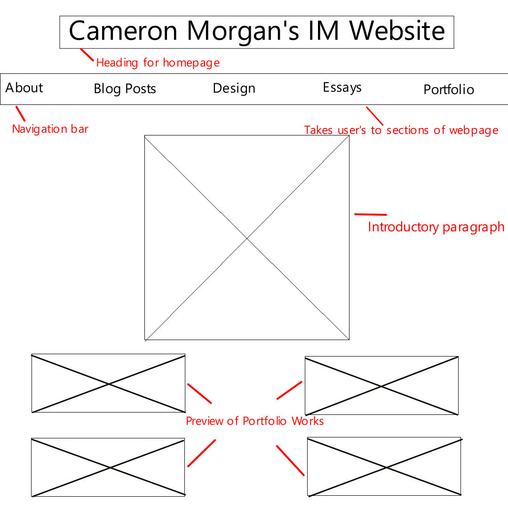
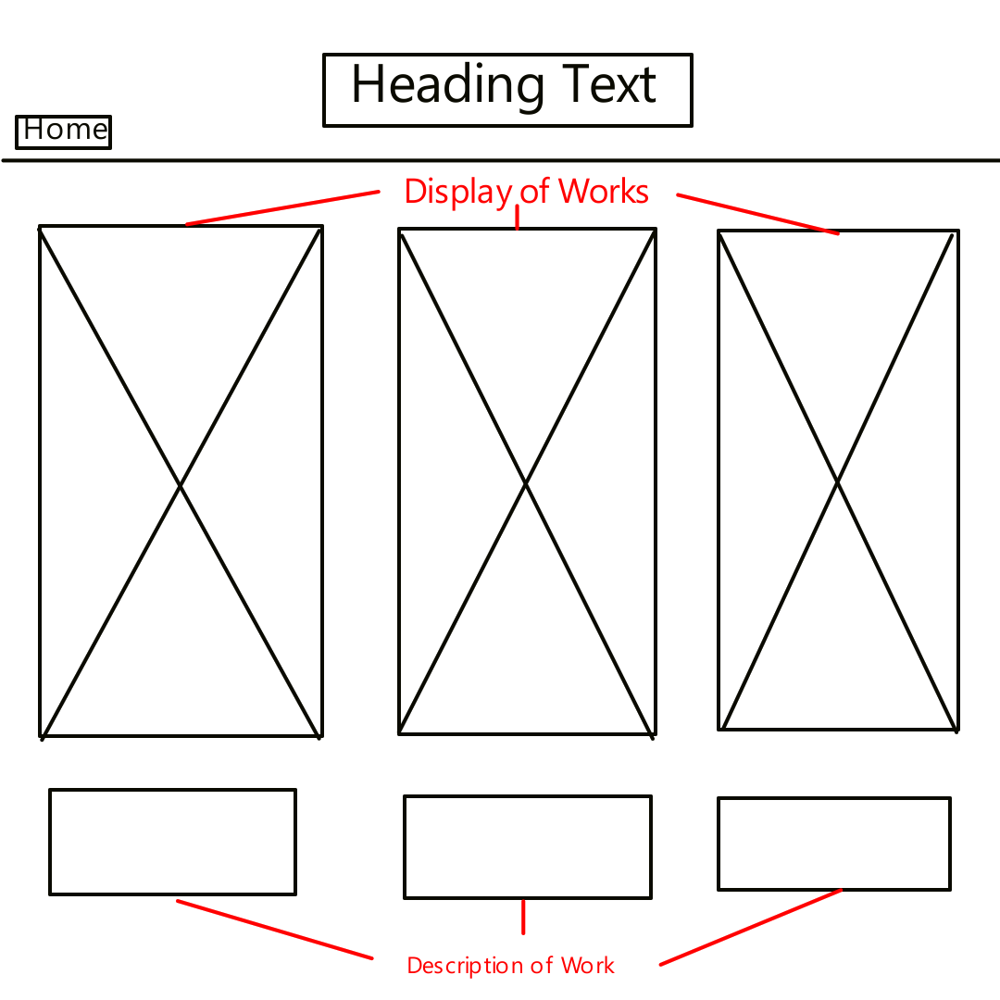

| Wireframe |
Description
|
|  |
This wireframe depicts the planning for the home page. In it we can see the main heading for the website, followed by a navigation tab that will allow the users to view each section of the website. On the homepage, there will be a small introductory paragraph so that users will know what to expect. At a later point, previews of my portfolio works will be added to entice users to want to see the portfolio, they will also be hyperlinks to give them fast access to each work |
 |
This will be the layout for the About Page and Essay Page.These pages will be mostly text based and so require the text to be at the forefront with assisting images aligned next to it. Compared to the portfolio or homepage which will have cards previewing the work, the essays will be academic and therefore displayed formally. |
 |
Similar to the About and Essay Pages, the blog posts are mainly text based with associating images. Each blog post will be divided into its own sections and have multiple paragraphs discussing the required topics and questions for each week. Blog posts will be separated by a horizontal rule to maintain order and prevent different week blog posts from becoming mashed up |
|  |
This is the planned wireframe for the portfolio page. Each work will have its own unique card that will have a preview of the game or a thumbnail. Underneath each one will have a description of that specific card. The card will be hyperlinks that when clicked on will take the user to the itch.io or github repo for the game or website. Arrows will be available to slide to view other games/websites. I am planning on making the design page similar, however until I learn how to do it I will have it in a table format with the wireframe or map and the description in the next coloumn |